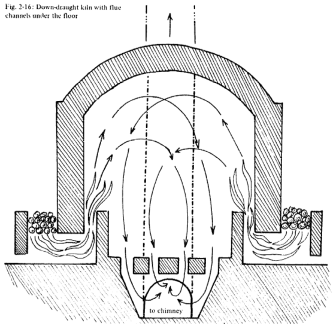
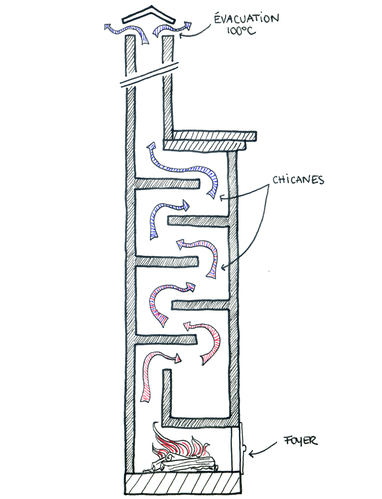
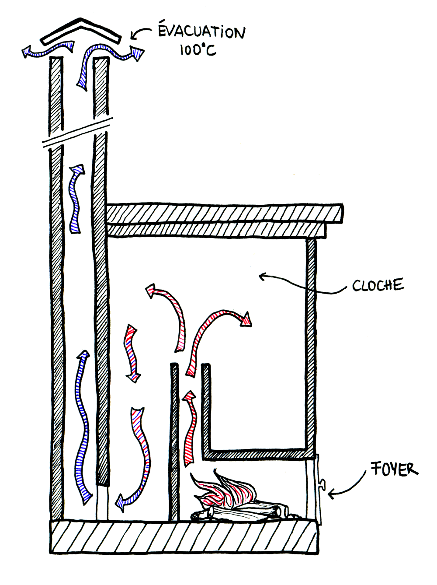
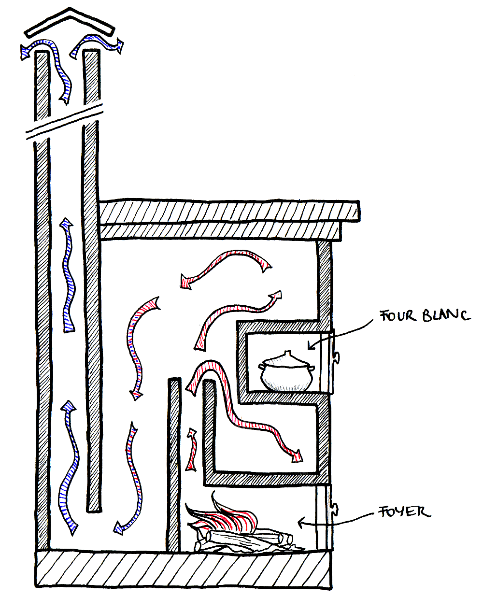
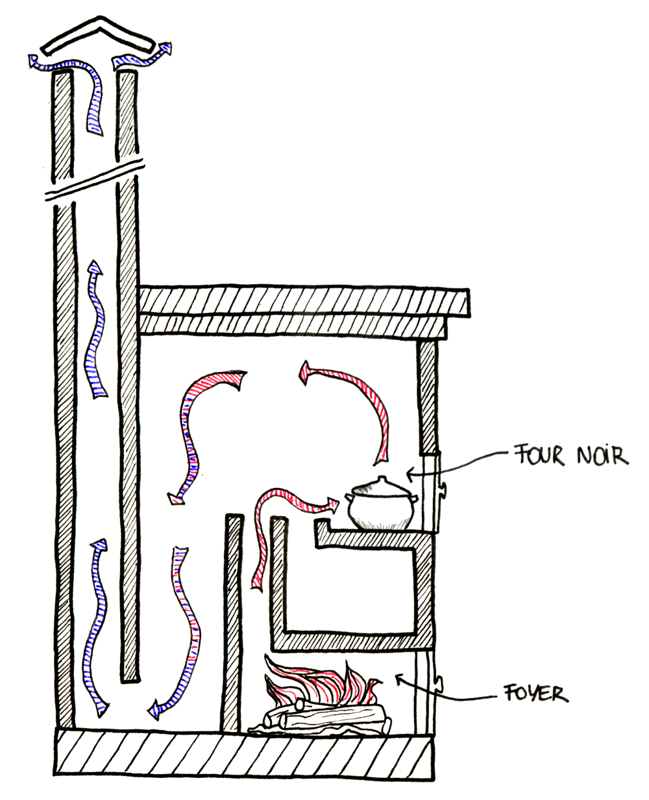

Le principe des cloches et leur utilisation avec les Batchrockets
Plan
Le principe
Il y a environ 3300 ans, sous la dynastie Shang, les chinois inventèrent le "four dragon" basé sur le principe des cloches. C'est ce même principe que nous réutilisons dans nos poêles de masse pour extraire la chaleur des fumées issues de la combustion du bois.

-

- 
En haut, Schéma d'un four "dragon" de potier chinois fonctionnant sous le principe des cloches;À gauche, photo d'un four dragon réalisé au Japon avec des cloches en série; à droite, schéma d'un four à briques en simple cloche.Sources : The Self-Reliant Potter: Refractories and Kilns, Henrik Norsker, 1987, p. 58 et 50. et wikimedia.org
Le principe des cloche se conçoit par analogie avec l'eau : dans un lac, l'eau coule très lentement. Ceci lui laisse le temps de se stratifier par couche de température. L'eau la plus froide est en bas, donc si avec un tuyau on pompait l'eau du fond du lac, on obtiendrait l'eau la plus froide.
A contrario, dans un torrent le débit est plus rapide et le chemin plus tortueux : tout se mélange et on ne peut extraire qu'une eau à une température moyenne.
L'idée des cloches est de faire entrer les gaz rapides et turbulents issus du coeur de chauffe (l'eau du torrent) dans un grand espace (le lac) de sorte que les gaz ralentissent suffisament pour qu'ils se stratifient naturellement par couche de température : les gaz chauds en haut et les gaz froids en bas.
Ainsi, en créant une ouverture tout en bas de la cloche, on récupère toujours les gaz les plus froids. Ce sont des gaz d'évacuation qui seront éjectés par la cheminée.
- 
- 
À gauche, schéma d'un poêle de masse à chicanes. À droite, schéma d'un poêle de masse utilisant le principe des cloches. Schéma réalisé par G. Stephens, association UZUME.
Une autre manière d'appréhender le système des cloches :
- Au contact des briques, les gaz donnent leur chaleur et se refroidissent.
- À cause de la stratification, plus les gaz se refroidissent, plus ils descendent dans la cloche.
- Lorsqu'ils sont suffisament froids, ils atteignent le niveau de la sortie situé en bas de la cloche.
- La cheminée d'évacuation les éjecte ensuite vers l'extérieur de la maison.
Ainsi, plus les gaz sont en contact avec une surface importante de briques, plus ils seront froids en sortie. On peut soit avoir toute cette surface dans une unique cloche, soit dans une série de petites cloches comme pour le four "dragon".
Les avantages des cloches
Le système des cloches provient des fours à briques. Il y a été très utilisé pour une raison précise : dans une cloche, les gaz descendent vers la sortie en empruntant tous les chemins possibles de manière uniforme. Les températures sont donc uniformes par couche de niveau dans une cloche. La partie haute de la cloche est toujours la plus chaude et plus on descend, plus la température diminue.
Schéma de circulation des gaz dans des canaux ascendants ou descendants. Source : The Rational Construction of Furnaces, W.E. Groume-Grimailo, Petrograd, Russia, 1911, p. 91.
Dans les poêles de masse, l'utilisation du système des cloches permet :
- D'éviter les "points chauds". La température est uniforme par couche de niveau donc la maçonnerie est moins solicitée.
- De diminuer les frottements qui ralentissent les gaz et obligent à utiliser des cheminées avec un fort tirage.
- Une grande variété de formes possibles, ce qui est un plus pour les rénovations.
- L'intérieur des cloches est un grand espace vide excellent pour y placer un four.
Four blanc ? Four noir ?
Les poêles de masse sont aussi des outils de cuisson très pratiques. Le four est chaud pendant toute la saison de chauffe. Pendant ou juste après une flambée le four est à sa température maximale. Ensuite la température du four diminue graduellement jusqu'à la prochaine flambée. On ne règle pas la température du four : on attend que le four ait la bonne température pour y enfourner le plat.
- 
- 
À gauche, schéma d'un poêle de masse à chicanes. À droite, schéma d'un poêle de masse utilisant le principe des cloches. Schéma réalisé par G. Stephens, association UZUME.
Dans un poêle de masse, deux types de four sont possibles :
- Dans un four noir les gaz chauds sont en contact direct avec les aliments. Le four devient "noir" parce que les suies (du carbone) s'y déposent. Les températures maximales atteintes sont de l'ordre de 500°C.
- Dans un four blanc les gaz sont en contact avec les parois externes du four. La partie intérieure du four reste toujours "blanche" parce qu'aucune suie ne s'y dépose. Les températures maximales atteintes sont de l'ordre de 250°C.
Vidéo d'un four noir pendant la flambée. Ça en jette.
Le dimensionnement des cloches
Plus les gaz chauds libérés par la combustion du bois entrent en contact avec des surfaces froides, plus ces gaz vont être refroidis. Par expérimentation, on a trouvé un lien de proportionnalité entre les surfaces internes du poêle qui sont "absorbantes" et la puissance des coeurs de chauffe. L'objectif est que les gaz sortent de la cheminée d'évacuation au minimum à une température d'environ 80-100°C.
Ainsi, chaque taille de batchrocket a une surface de cloche qui lui correspond :
| Diamètre de la cheminée interne (mm) | 140 | 165 | 200 | 230 | 250 |
|---|---|---|---|---|---|
| SIA en simple cloche (m2) | 4,6 | 6,4 | 9,4 | 12,5 | 14,7 |
| SIA en double cloche (m2) | 3,9 | 5,4 | 8,0 | 10,6 | 12,5 |
La SIA signifie Surface Interne Absorbante. Elle traduit le fait que toutes les parois internes du poêle n'absorbent pas la chaleur. Ainsi, dans la SIA d'un poêle en cloche, on ne compte pas :
- Les parois isolées par l'intérieur;
- Le sol du poêle;
- Les parois qui emettent de la chaleur, c'est à dire tout le coeur de chauffe.
- Les parois internes faites d'un matériau non-isolant avec lesquelles les fumées sont en contact pendant leur descente vers la base de la cheminée d'évacuation;
- Cas particulier : on compte pour moitié les parois de la cheminée d'évacuation si elle n'est pas isolée. En effet, les gaz y vont en montant et n'y echangent pas aussi bien leur chaleur.
Les règles de construction des cloches
En pratique, trois règles de base permettent de construire des cloches :
- À chaque taille de Batchrocket correspond une certaine surface de cloche qu'il faut respecter pour que les gaz sortent à la bonne température.
C'est la SIA du paragraphe précédent. Pour un Batchrocket donné, plus la SIA est importante, plus les gaz vont sortir froids. Mieux vaut sortir trop chaud que trop froid !
- La première surface que voient les gaz en sortant de la cheminée interne (quasi-systématiquement la face interne du sommet du poêle) doit mesurer au moins 5 fois la section de la cheminée interne et doit être au moins 30 cm au dessus de la sortie de la cheminée interne.
- À chaque fois que les gaz changent de direction, la section de la conduite doit être supérieure ou égale à 1,5 ou 2 fois la section de la cheminée interne.
Ces changements de direction se retrouvent à la base de la cheminée d'évacuation, à chaque changement de cloche et dans les bancs de chauffe.
Les autres systèmes
Un système très classique en Europe de l'Ouest est de faire passer les gaz dans une série de chicanes empilées les unes sur les autres. Il existe en fait beaucoup de variété dans les différents systèmes de récupération de la chaleur.
Ces systèmes ont même été réutilisés pour augmenter le rendement des poêles en fonte. L'objectif est toujours le même : faire que les gaz issus de la combustion entrent en contact avec une certaine surface de briques ou de métal pour que les gaz sortent de la cheminée à une température d'environ 100°C.

Schémas de poêles en fonte Norvégiens des années 1800. Source : The Book of Masonry Stoves, David Lyle, 1984, p. 53.

{kind=link}